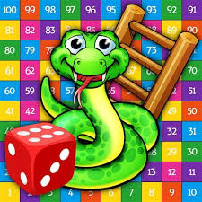

Snake and Ladder Game
A C program that uses graphics
Snake and Ladder game
View the source of this content.
It's a Snakes game where you play vs the computer. The objective of the game is to make the other player crash. This project is aimed at developing a Multiplayer Snakes and Ladders Game, which can be played over LAN. This game has been built using C language. The snake game is simple game
Introduction
• Snakes and ladders, or chutes and ladders, is a classic children's
board game.
• It is played between 2 or more players on a playing board with
numbered grid squares.
• On certain squares on the grid are
drawn a number of "ladders" connecting two squares together, and a
number of "snakes" or "chutes" also connecting squares together.
• The size of the grid (most commonly 8×8, 10×10 or 12×12) varies from
board to board, as does the exact arrangement of the chutes and the
ladders: both of these may affect the duration of game play
Instructions
1) The game starts on a first come first serve basis.
2) If the
die rolled is six, the player will get another chance to roll the
die.
3)There could be only one winner. Once a player wins (reaches the
100th mark), the game is over.
4) The first player creates the
game and pass phrase.
5) Others joining the game should know the
pass phrase to join the game
Single Mode: In this mode: "Player 1" -> User and "Player 2" -> Computer
Double Mode: Two players can play with the diceThrowing Dice: This is done by pressing the left button on "Player 1". The counter is stopped when you release the button and the counter value is displayed on the Dice.
If player gets number six after throwing the dice, then the respective player is eligible for one more throw.
Snapshots
Home page

Game board